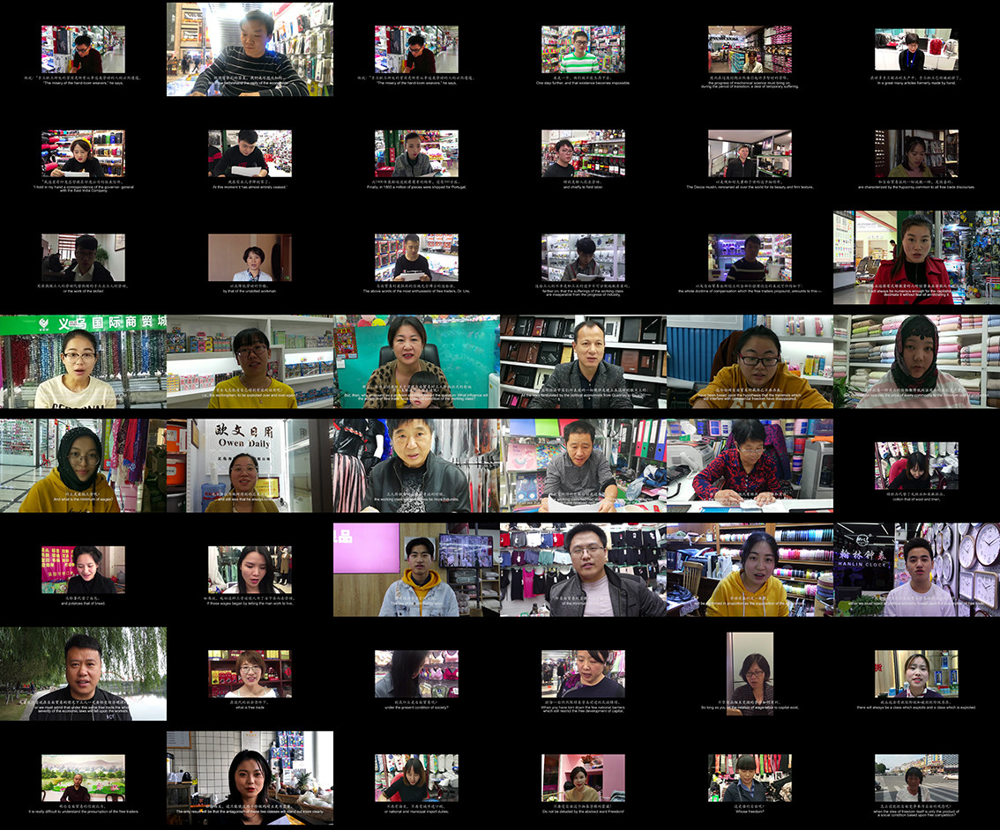
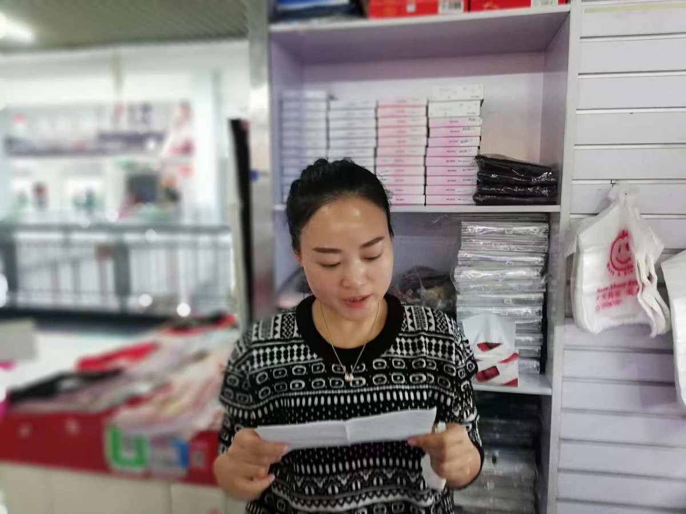
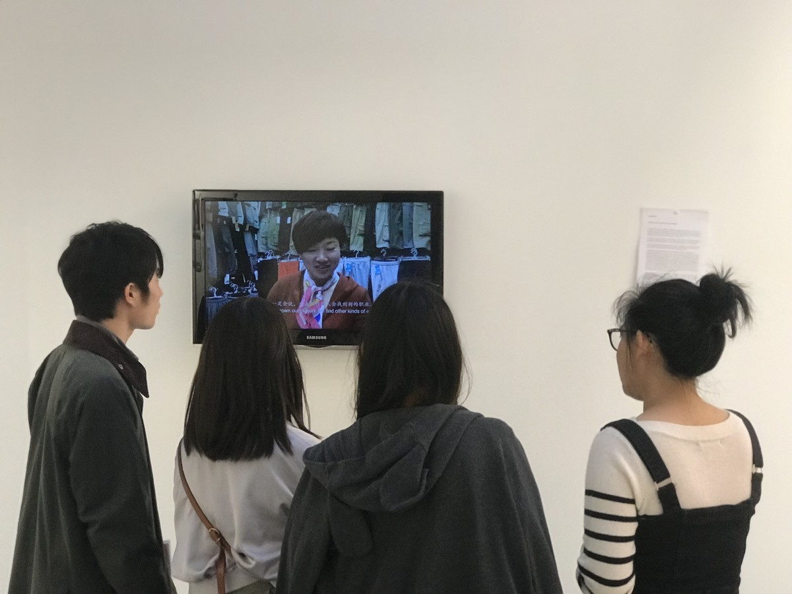
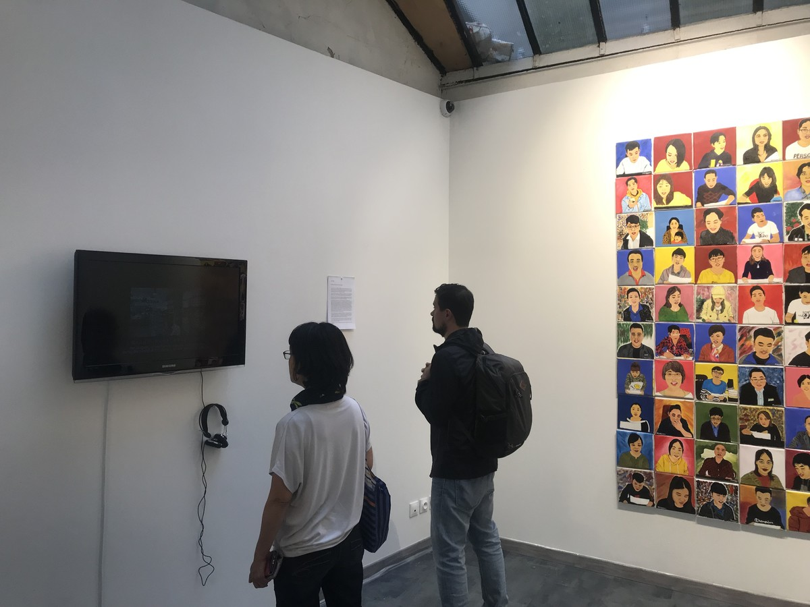

关于自由贸易的演讲 | FREE TRADE

彩色单屏幕录像，双声道可变尺寸，14分钟，可变尺寸，2018
Video, Color single-screen dual-channel , 14 minutes, Variable，2018
2018年10月，艺术家邀请了116名义乌国际商贸市场里的生意人，一起朗诵了马克思在1848年发表的关于“自由贸易”的演讲稿（选段），并用录像记录下来。
In October 2018, the artist invited 116 businessmen from the Yiwu international trade market to read Karl Marx's speech on "Free trade" published in 1848 (excerpts) and recorded it on video.
义乌国际商贸城营业面积400万平方米，7万个商位，从业人员20万。众多中国制造商品通过义乌国际商贸城走向非洲、中东、南亚、东欧等地区。2005年被联合国、世界银行和摩根士丹利评为“全球最大的小商品批发市场”。
Yiwu International Trade City covers a business area of 4 million square meters, with 70,000 business booths and 200,000 employees. Many Chinese manufactured goods have traded to Africa, the Middle East, South Asia and Eastern Europe through the market. In 2005, it was named “the world's largest small commodity wholesale market” by the United Nations, the World Bank and Morgan Stanley.

作品拍摄现场，义乌国际贸易城，义乌
Shooting site, Yiwu international trade city, Yiwu

AMAC Projects当代艺术中心，巴黎
AMAC Projects, Paris

AMAC Projects当代艺术中心，巴黎
AMAC Projects, Paris